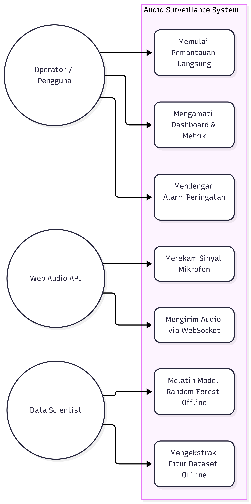

02 - Use Case Diagram & Rincian Aktor#
Dokumen ini mendefinisikan kasus penggunaan (Use Cases) dan batasan interaksi antarentitas pengguna dengan sistem Audio Classification. Seluruh use case yang dipetakan di bawah ini mengacu secara ketat pada fitur-fitur yang terimplementasi pada kode program.
1. Identifikasi Aktor Sistem#
Sistem berinteraksi dengan tiga aktor utama:
Operator Lingkungan / Pengguna Akhir (End User):
Pengguna yang mengakses sistem melalui peramban web (Live Surveillance di Port 5000 atau Dashboard Streamlit di Port 8501).
Mengoperasikan mikrofon, mengamati status kebisingan secara langsung, mendengarkan peringatan alarm bising, dan meninjau log aktivitas.
Data Scientist / Pengembang (Developer):
Pengembang yang bertanggung jawab terhadap penyiapan data, pelatihan model machine learning, validasi performa, serta pemeliharaan skrip otomatisasi.
Subsistem Audio Klien (Browser Audio Engine / System Actor):
Aktor sistem sekunder berbasis Web Audio API di peramban yang bertugas merekam sinyal mikrofon mentah, memecah stream ke dalam buffer, serta mensintesis bunyi alarm suara (buzzer) seketika.
2. Use Case Diagram#
Berikut adalah diagram use case sistem Audio Classification yang menggambarkan interaksi antara aktor dan fitur-fitur sistem.

3. Rincian Narasi Kasus Penggunaan (Use Case Specification)#
UC-01: Memulai Pemantauan Audio Langsung#
Aktor Utama: Operator Lingkungan.
Aktor Sekunder: Subsistem Audio Klien (
Web Audio API).Prasyarat: Peramban web memiliki izin (permission) untuk mengakses mikrofon fisik dan server Flask aktif pada port 5000.
Skenario Normal:
Pengguna mengklik tombol “▶️ Mulai Deteksi Langsung” pada antarmuka.
Peramban meminta izin akses mikrofon jika belum diberikan sebelumnya (
navigator.mediaDevices.getUserMedia).Sistem menginisialisasi objek
AudioContext, menghubungkanMediaStreamSourcekeAnalyserNodedanScriptProcessorNode.Animasi visualisasi gelombang mulai berputar dan status mikrofon berubah menjadi hijau (Aktif Mendengarkan).
UC-03: Mengatur Interval Jendela Deteksi#
Aktor Utama: Operator Lingkungan.
Deskripsi: Pengguna dapat memilih durasi jendela akumulasi audio sebelum dikirim ke model untuk diklasifikasikan.
Pilihan Interval:
2 Detik,3 Detik (Default/Rekomendasi),5 Detik,8 Detik, atau10 Detik.Implementasi: Fungsi JavaScript
changeDuration()memperbarui variabeldurationSeconds, mengalikan dengan frekuensi cuplik 22.050 Hz untuk menghasilkan nilaiCHUNK_SIZEbaru, mengosongkan buffer, dan mencatat perubahan pada log.
UC-06 & UC-07: Klasifikasi Sinyal & Pemicuan Alarm Buzzer#
Aktor: Subsistem Audio Klien & Backend Server Flask.
Alur:
Ketika jumlah sampel audio dalam array
bufferChunkmencapai ukuranCHUNK_SIZE, data digabungkan ke dalamFloat32Array.Klien melakukan HTTP POST ke
/api/classify_pcmdengan muatan binary buffer.Backend mengekstrak 16 fitur audio via
librosa, melakukan normalisasi denganscaler.transform(), dan memprediksi menggunakanknn_model.predict().Backend mengembalikan respons JSON berupa label (
berisikataunon_berisik), persentase keyakinan, dan 4 fitur utama.Jika hasil prediksi adalah
berisik:Status antarmuka berubah menjadi merah dengan animasi berkedip (pulsing alert).
Jika tombol toggle alarm aktif (
chkSoundAlert.checked == true), fungsiplayAlarmSound()mengeksekusi osilator Web Audio sawtooth 900 Hz \(\rightarrow\) 450 Hz untuk membunyikan alarm buzzer.
Jika hasil prediksi adalah
non_berisik:Status antarmuka berubah menjadi hijau tenang (Kondisi Tenang), dan alarm tidak dibunyikan.
UC-09 & UC-10: Eksplorasi Dataset & Unduh Data CSV#
Aktor: Operator Lingkungan / Peneliti.
Lokasi: Dashboard Streamlit, Menu “📊 Eksplorasi Dataset 16 Fitur”.
Deskripsi: Pengguna dapat memfilter data berdasarkan kategori (
berisik,non_berisik), meninjau tabel interaktif dari 197 rekaman audio, melihat distribusi statistik, dan mengunduh seluruh data dalam format CSV melalui tombol ekspor.
UC-13 & UC-14: Ekstraksi Fitur Batch & Pelatihan Model KNN#
Aktor: Data Scientist / Pengembang.
Deskripsi: Eksekusi melalui skrip konsol Python:
python extract_features.py: Mengekstrak berkas audio dari ZIP, memvalidasi sampel, dan menghitung nilai rata-rata 16 fitur.python train_knn.py: Melakukan pembagian data latih/uji (80:20), melakukan tuning hyperparameter \(K\) (1 sampai 21 ganjil), fungsi bobot, dan metrik jarak dengan 5-Fold Stratified Cross Validation, lalu menyimpan model terbaik.